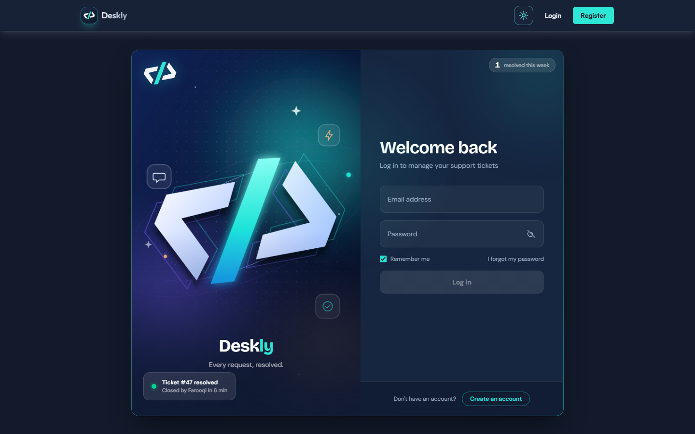
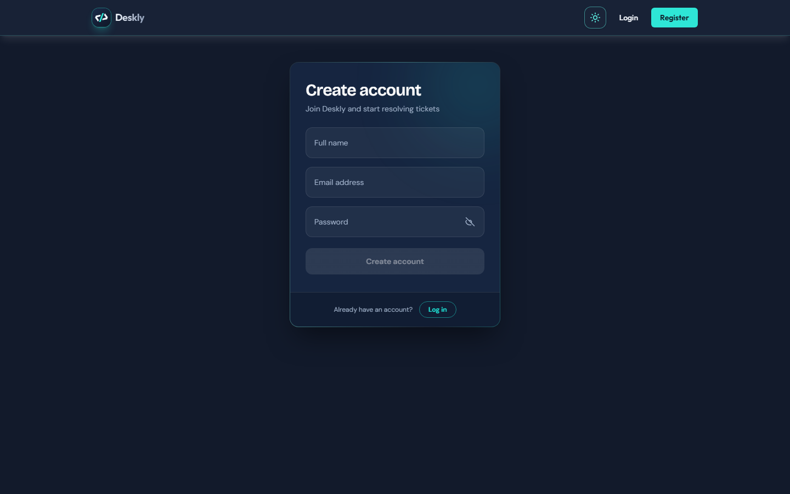
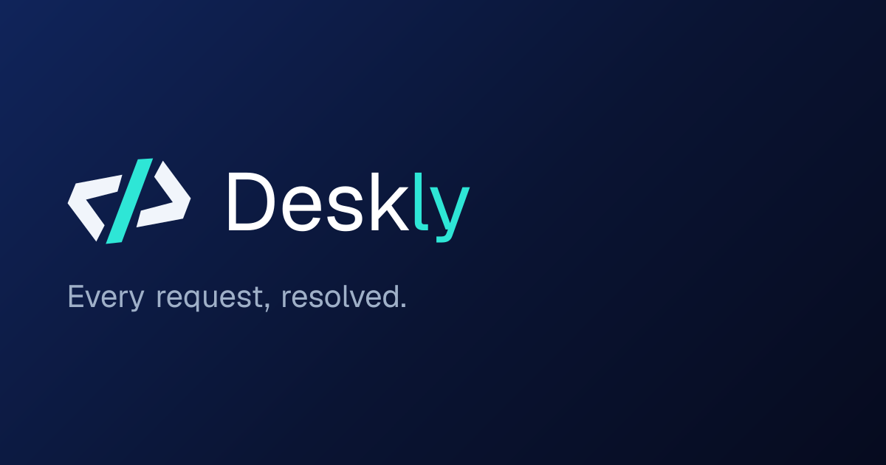

Full-Stack Web Apps
End-to-end products — database, API and UI — designed to scale and built to be maintained.
- Next.js + NestJS
- Auth & roles
- Dashboards
Full-Stack Software Engineer
I build clean, scalable web applications — from database to UI — that solve real problems and are a pleasure to use.
About me
Hi, I'm Muhammad Umar Farooqi — an Associate Software Engineer at CodingPixel and a Software Engineering graduate of The University of Haripur. I work across the stack to turn ideas into clean, reliable products.
I write efficient backend logic, design intuitive interfaces and make sure everything works end to end — with tests, CI and real deployments, not just demos. My current focus is TypeScript everywhere: Next.js and React on the front, NestJS, Node.js and PostgreSQL on the back.
Muhammad Umar Farooqi
My approach“Build it clean, test it well, ship it with confidence.”
Services
From a single API to a complete product — designed, built, tested and deployed with care.
End-to-end products — database, API and UI — designed to scale and built to be maintained.
Secure, typed REST APIs with clean architecture, validation, migrations and proper error handling.
Fast, responsive and accessible interfaces in React and Next.js, shaped by UX design principles.
Unit and e2e test suites, CI pipelines and reliable deploys so every feature ships with confidence.
Skills & Technologies
Modern, typed tools across the whole stack — chosen for reliability, speed and maintainability.
Selected Work
Real, deployed and tested — each one taught me something new about building software well.
Every request, resolved.



A production-style customer support desk with three roles — customer, agent and admin. Customers raise tickets, agents work them through a strict status machine, admins oversee everything — and every change is written to an audit trail.
Create a free account on the live app to explore it as a customer. For an agent or admin walkthrough, get in touch.
ticket_events log record who changed what, and when.Machine-learning system that analyses source-code metrics to predict bugs and vulnerabilities before deployment, integrated into Jenkins and GitLab CI.
Authenticated REST API with NestJS — JWT-protected routes, TypeORM over PostgreSQL, CORS config and unit + e2e test suites.
View code ↗Next.js App Router client for the Tasks API — sign in, list, filter by status, create and delete tasks through one typed fetch wrapper.
View code ↗Server-fetched country list, dynamic /country/[code] routes, loading & error boundaries and border navigation — in React + Vite, then Next.js.
Typed entities over PostgreSQL with committed migrations, a repository-based seed script and six typed query functions.
View code ↗TypeScript CLI that fetches users, posts and todos concurrently, groups them with a generic groupBy<T> and prints a ranked report.
Career Path
From studying how software fails to building systems that don't — every step has been about learning to ship better software.
Download résumé ↓CodingPixel
The University of Haripur
10 certifications & guided projects
Open Source
Pulled live from the GitHub API every time the page loads.
Credentials
Professional certificates and courses from Google, Cisco, Coursera and Simplilearn.
Professional Certificate
Security fundamentals, SIEM tools, Python for security, network & threat analysis. View program ↗Professional Certificate
Data cleaning, analysis and visualisation with spreadsheets, SQL, Tableau and R. View program ↗Professional Certificate
Statistics, regression, machine-learning models and Python data workflows. View program ↗Professional Certificate
User research, wireframing, prototyping and usability testing in Figma. View program ↗Professional Certificate
SEO, SEM, analytics, email marketing and building online stores. View program ↗Guided Project
Designing responsive desktop and mobile web pages in Canva and publishing them online. View course ↗Guided Project
Setting up free hosting and a sub-domain, then building and publishing a WordPress website. View course ↗Certificate of Completion · Simplilearn SkillUp
Version control with Git — commits, branching, merging and collaborative workflows. Credential ID: 7412715 View certificate ↗Certificate of Completion · Simplilearn SkillUp
Containers, images and Dockerfiles — packaging and running applications with Docker. Credential ID: 7518616 View certificate ↗Course Certificate · Cisco Networking Academy
Core JavaScript — variables, data types, operators, control flow, functions and error handling. Credential ID: 5feae51e-e42c-490c-8512-4c45b20b33e2Contact
Have a role, a project or just want to say hi? My inbox is always open — I usually reply within a day.